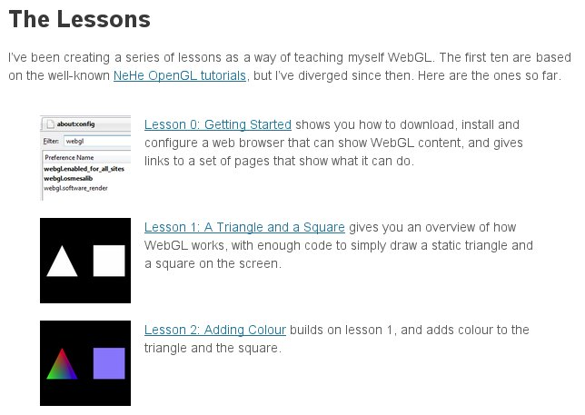
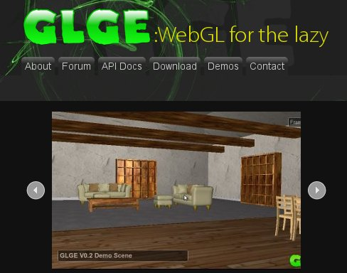
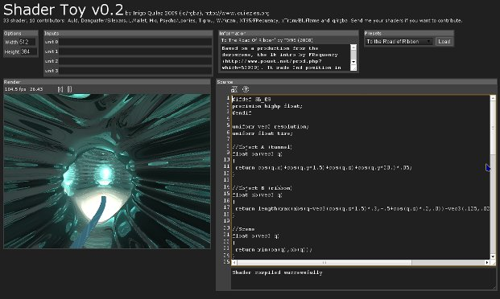

WebGL
Press space for next slide.
Press backspace for previous slide.
WebGL
OpenGL ES 2.0 + JavaScript
<CANVAS>
How do I get it?
Firefox 4 beta or Minefield
WebKit nightly on OS X 10.6
Chromium
khronos.org/webgl/wiki/Getting_a_WebGL_Implementation
IE9 support?
No idea whatsoever.
Chrome Frame?
In HTML
The usual <CANVAS>
Works like an image
CSS, toDataURL(), etc.
OpenGL ES 2.0
OpenGL for mobile phones.
Also works on computers.
Accelerated drawing.
1.1 vs. 2.0
Fixed vs. programmable.
Programmable?
Shaders, baby, yeah!
Massive performance.
No kidding?
1000x faster than JavaScript
(depending on shader)
What's it good for?
Custom 2D drawing.
Custom 3D drawing.
Custom?
Everything requires shaders.
No shortcuts.
Drawing pipeline
Vertex shader
⇓
Fragment shader
⇓
Render target
Vertex shader
- Where to draw
- Varyings for the fragment shader
Computes
Vertex shader
- Buffers (vertex arrays)
- Textures (images)
- Uniforms (call parameters)
Parameters
Fragment shader
- Color of the pixel
Computes
Fragment shader
- Varyings from the vertex shader
- Textures
- Uniforms
Parameters
Render target
<CANVAS>
or
Framebuffer object (FBO)
FBO
In GPU memory
For rendering to textures
Textures
- <CANVAS>
- <IMG>
- <VIDEO>
- And pixel arrays.
WebGL can load:
CANVAS
All the text here.
(CSS 3D would be nicer, but eh.)
IMG

VIDEO
Further reading
learningwebgl.com
Isn't that a bit...
...cumbersome? Yes.
Overkill for simple drawing.
Libraries to the rescue!
Libraries
Alphabetically:
C3DL
CopperLight
CubicVR
GLGE
O3D
SpiderGL
X3DOM
XB PointStream
GLGE
glge.org
SpiderGL
spidergl.org
Games
Google's Quake 2 -port
O3D pool game
Some Q3 map viewers
Applications?
3D model viewers
ChemDoodle molecule visualizer
ShaderToy
WebGL Street View
ChemDoodle
web.chemdoodle.com
ShaderToy
www.iquilezles.org/apps/shadertoy/
Status
WebGL 1.0 soon.
Chrome, Safari, Firefox, Opera(?)
Shader validation with ANGLE.
CPU rendering with OSMESA.
ANGLE?
Almost Native Graphics Layer Engine
angleproject.googlecode.com
OpenGL ES 2.0 interpreter
Interpreter?
Converts WebGL shaders to native.
GLES 2.0 -> OpenGL 2.1
GLES 2.0 -> DirectX 9
OSMESA
Off-Screen MESA GL
Draws on the CPU.
Very slow.
Conclusion
Fast custom drawing.
Quite well supported.
Web-compatible.
Requires programming.
Thank You!
Ilmari Heikkinen
ilmari.heikkinen@gmail.com
Cheats
App.editSlide()
App.toggleAllSlidesVisible()
App.toggleApp()
App.wavyText = false
App.cycleColors = true
txt = App.scene.getNodesByKlass(Magi.MeshText)[0]
txt.alignedNode.material.floats.pitch = 2
txt = App.scene.getNodesByKlass(Magi.MeshText)[2]
App.addDotShader(txt)
txt.alignedNode.material.floats.pitch = 2
The End
Click to return to start.